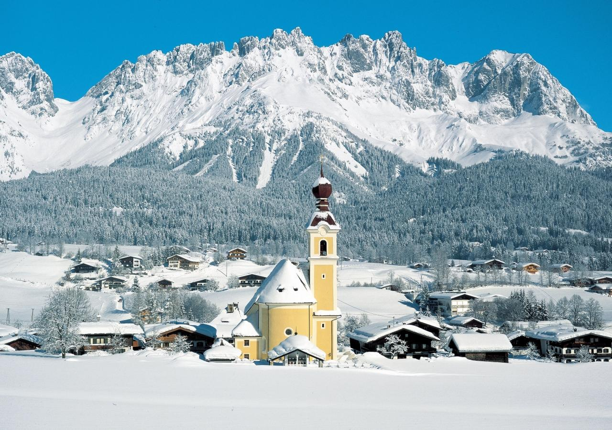
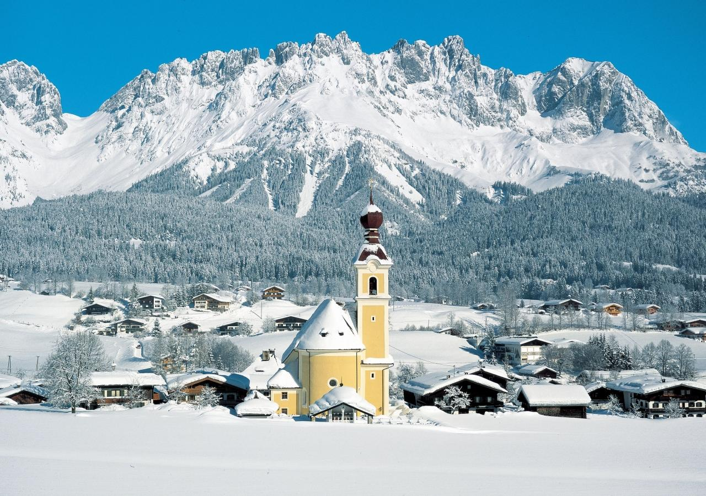
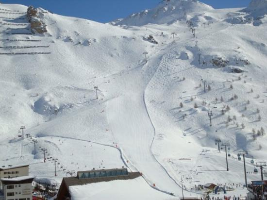
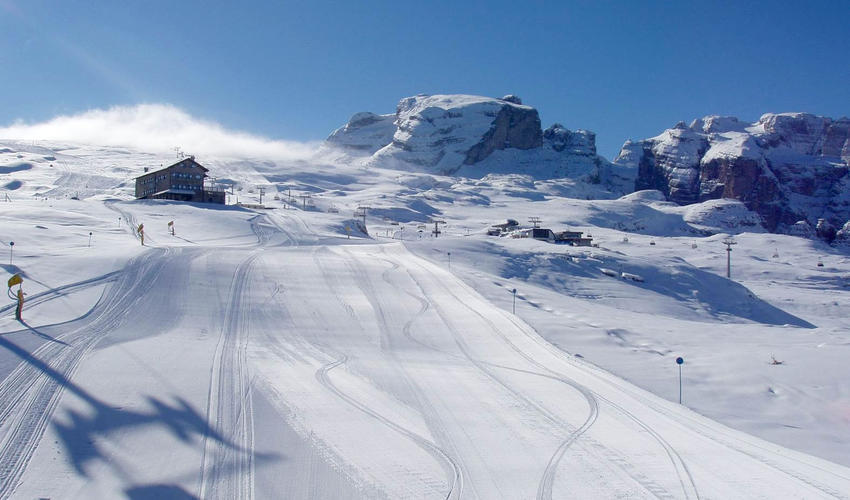
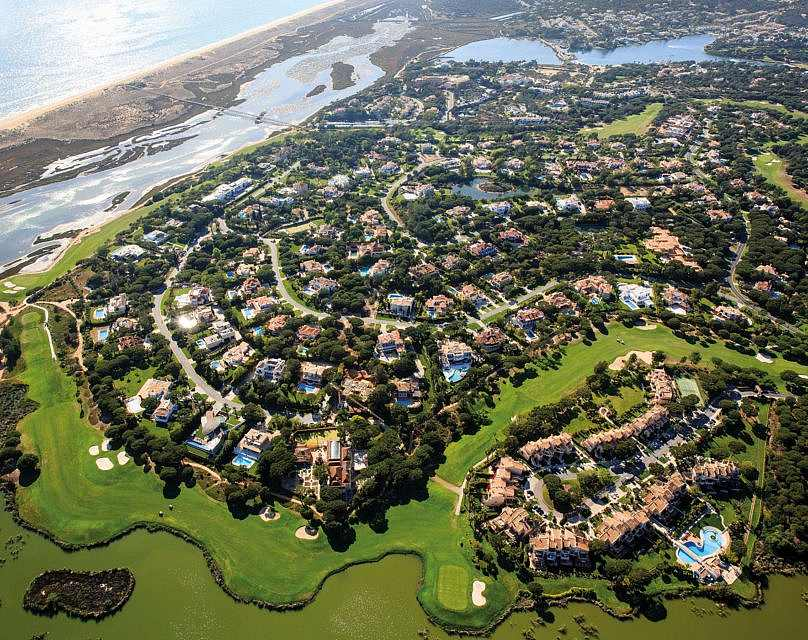

Soll, Austria
Last year, we broke with tradition and chose to ski in Austria, as apposed to our usual choice of France.
Soll definitely didn't dissapoint us. The slopes, food and apres ski were all fantastic.

Last year, we broke with tradition and chose to ski in Austria, as apposed to our usual choice of France.
Soll definitely didn't dissapoint us. The slopes, food and apres ski were all fantastic.

Out of all the places I've been skiing, Tignes is undoubtedly my favourite. It has the best slopes I'v ever skied on and the main town there had every you could have asked for!
We loved it so much the first time that we returned there for the next 5 years! We almost knew every ski route off by heart!

We went skiing in Val d'Isere when i was in 1st Year and I still remember it vividly. The weather, food and slopes were all amazing the time we were there, so we were very lucky!!
But all good things must come to an end, and that happened when I broke my arm after falling on one of the slopes. I was out of action for the rest of the holiday.

I've been skiing in Italy twice as a result of my secondary schools annual ski trip. The first time was when i went in 2nd Year, and then again in 5th Year as an instructor.
Being a skiing instructor for the first time was a great experience. I was given my own group to work with for the week and it was great to see them all improve.

When the snow gets too much for us, we like to soak up the sun in Quinta Do Lago, in Portugal. We've been going here for a while now so we know the area quite well which makes the holiday easier each year we go back.
The beaches are quiet and there's a fantastic lack of noisy children, which is difficult to find in most sun-soaked holiday areas.
